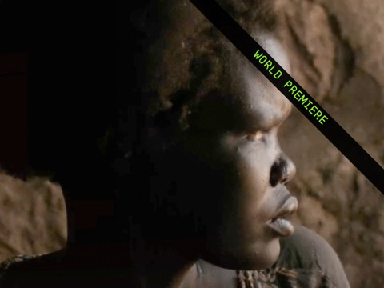

Double Exposure 2025
The eleventh edition: Oct 30 - Nov 2, 2025 · In person. Theme: “The New Fault Lines”.
Venues: The Johns Hopkins University Bloomberg Center, Naval Heritage Center, Martin Luther King Jr. Memorial Library, The Avalon Theater, Kimpton Hotel Monaco
Programme source: the 2025 festival catalogue (PDF, in the Wayback Machine) and the festival website.
Documentary craftLegal & safety for reportersMigration & bordersSurveillance & privacyFunding & distributionRace & civil rightsCorruption & powerWomen, gender & sexuality
Films
 The Six Billion Dollar ManEugene JareckiOpening Night
The Six Billion Dollar ManEugene JareckiOpening Night Trade SecretAbraham JoffeCenterpiece
Trade SecretAbraham JoffeCenterpiece Cover-UpLaura Poitras, Mark ObenhausSpotlight
Cover-UpLaura Poitras, Mark ObenhausSpotlight Magic & MonstersNorah ShapiroClosing Night
Magic & MonstersNorah ShapiroClosing Night Ask E. JeanIvy Meeropol2025 · 91 min
Ask E. JeanIvy Meeropol2025 · 91 min- BombshellBen Loeterman2025 · 82 min
 Canceled: The Paula Deen StoryBilly Corben2025 · 103 min
Canceled: The Paula Deen StoryBilly Corben2025 · 103 min CycleLaura Dyan Kezman, William Howell2025 · 95 min
CycleLaura Dyan Kezman, William Howell2025 · 95 min KhartoumIbrahim Snoopy Ahmad, Timeea Mohamed Ahmed, Rawia Alhag2025 · 82 min
KhartoumIbrahim Snoopy Ahmad, Timeea Mohamed Ahmed, Rawia Alhag2025 · 82 min Listen to MeStephanie Etienne, Kanika Harris2025 · 77 min
Listen to MeStephanie Etienne, Kanika Harris2025 · 77 min PoisonedJoy Ash2025 · 90 min
PoisonedJoy Ash2025 · 90 min TataLina Vdovîi, Radu Ciorniciuc2025 · 82 min
TataLina Vdovîi, Radu Ciorniciuc2025 · 82 min- The Black SwanMads Brügger2025 · 90 min
Shorts
 All the Empty RoomsJoshua Seftel2025 · 33 min
All the Empty RoomsJoshua Seftel2025 · 33 min Bloodlines, MississippiCrystal Kayiza2025 · 20 min
Bloodlines, MississippiCrystal Kayiza2025 · 20 min Boil That Cabbage DownCandace Williamson2025 · 25 min
Boil That Cabbage DownCandace Williamson2025 · 25 min ExodusNimco Sheikhaden2025 · 35 min
ExodusNimco Sheikhaden2025 · 35 min In Exchange for FleshCorey Devon Arthur, Sandro Ramani2025 · 15 min
In Exchange for FleshCorey Devon Arthur, Sandro Ramani2025 · 15 min Jeffery, Come HomeEsther Lim, Jankhna Sura2025 · 21 min
Jeffery, Come HomeEsther Lim, Jankhna Sura2025 · 21 min No se ve desde acá (You Can't See It From Here)Enrique Pedráza-Botero2025 · 20 min
No se ve desde acá (You Can't See It From Here)Enrique Pedráza-Botero2025 · 20 min
Rovina's ChoiceThomas Jennings, Annie Wong2025 · 22 min Status: VenezuelanMauricio Rodriguez-Pons2025 · 35 min
Status: VenezuelanMauricio Rodriguez-Pons2025 · 35 min Teaching AmericaAnurima Bhargava2025 · 20 min
Teaching AmericaAnurima Bhargava2025 · 20 min Thank You for Allowing Me to Speak with You TodayKate Stonehill2025 · 8 min
Thank You for Allowing Me to Speak with You TodayKate Stonehill2025 · 8 min We Bloom in Spring2025 · 19 min
We Bloom in Spring2025 · 19 min
Forum sessions and events
Thursday, October 30, 2025
- Thu Oct 30 · 9:30 AMPanel · DX²One Step Ahead: Protecting Stories and Sources in a Shifting Legal LandscapeRenee Griffin, Alison Schary, Mary Inman, Micah Ratner, Sig Libowitz
- Thu Oct 30 · 10:45 AMPanel · DX²One Year In: Forging New Alliances in Funding and DistributionSahar Driver, Margaret “Mishi” Ebrahim, Adam Ellick, Leslie Fields-Cruz, Tara Hein-Phillips, Ted Hope, Vanessa Hope, Amanda Pike, Mishi…
- Thu Oct 30 · 1:00 PMPanel · DX²Fog of Falsehood: Disinformation, AI, and the Battle Over RealityGaia de Simoni, Eugene Jarecki, Ben Loeterman, Nick Quested, Kate Stonehill, Zach Toombs
- Thu Oct 30 · 2:15 PMPanel · DX²Race in Real TimeAnurima Bhargava, Byron Hurt, Laura Dyan Kezman, William Howell, Natalie Bullock Brown
- Thu Oct 30 · 3:35 PMPanel · DX²Piercing the Numbness: Getting Beyond the Intolerable EverydayJames Burnett, Thomas Jennings, Conall Jones, Sandro Ramani, Almudena Toral, Natalie Wilson, Derrica Wilson, Kate Woodsome
Friday, October 31, 2025
- Fri Oct 31 · 9:30 AMConversation · DX²Echoes from the Embassy: A Conversation with Eugene JareckiEugene Jarecki, Diana Jean Schemo
- Fri Oct 31 · 10:20 AMPanel · DX²Against the Current: Breaking Through the Dominant NarrativeCostas Christ, Norah Shapiro, Elizabeth Foy Larsen, Jacqueline Olive, Abraham Joffe
- Fri Oct 31 · 11:00 AMScreening eventShort Strand 1: Illuminating MemoryBenjamin Duchek, Conall Jones, Sandro Ramani, Corey Devon Arthur, Anurima Bhargava, Kate Stonehill
- Fri Oct 31 · 11:30 AMPanelBetween Care and Truth: Ethical Dilemmas in Character-Driven DocumentaryPatricia Aufderheide, Hanna Lane Miller, Bridget Hunnicutt, Nick Price, Hanna Lane Miller
- Fri Oct 31 · 1:15 PMPanel · DX²Closed Doors, Open Wounds: Investigating Hidden Online HarmJoy Ash, James Beal, Graham Sack
- Fri Oct 31 · 1:15 PMScreening eventShort Strand 2: DX Reel South Award ShortsBenjamin Duchek, Enrique Pedráza-Botero, Crystal Kayiza, Nick Price
- Fri Oct 31 · 2:20 PMPanel · DX²Meet the Funders Who Are Meeting the MomentXimena Amescua Cuenca, Eric Ferrero, Maxyne Franklin, Lauren Pabst, Diana Jean Schemo
- Fri Oct 31 · 3:00 PMScreening eventShort Strand 3: Of Resistance and RebirthWonjung Bae
- Fri Oct 31 · 3:20pmPanel · DX²Subterfuge in Search of TruthMads Brügger, Ted Hope
- Fri Oct 31 · 3:20 PMConversationSubterfuge in Search of Truth: Mads Brügger in Conversation with Ted HopeMads Brügger, Ted Hope
Saturday, November 1, 2025
- Sat Nov 1 · 9:30amWorkshopWorkshop Day
- Sat Nov 1 · 10:00amWorkshopBulletproof Your FilmEric Feder
- Sat Nov 1 · 10:00 AMWorkshopWorkshop: Bulletproof Your FilmEric Feder
- Sat Nov 1 · 10:00 AMWorkshopWorkshop: DIY Impact & Distribution for Short DocsSam Van Pykeren
- Sat Nov 1 · 11:30 AMWorkshopWorkshop: Pro Bono Legal Clinic for Investigative StorytellersAzeezat Adeleke, Chelsea Kelly, Eric Feder, Sig Libowitz, Mary Inman
- Sat Nov 1 · 12:15 PMWorkshopWorkshop: Visual Investigation: Innovative Tactics for Video JournalismKevin Clancy, Jake Godin, Jennifer Smart
- Sat Nov 1 · 1:00 PMWorkshopWorkshop: Digital Security in the Surveillance AgeAsh Guevara
Date not listed
- PitchDX Access | DX PitchXimena Amescua Cuenca, Natalie Bullock Brown, Laetitia Doyle, Mishi Ebrahim, Adam Ellick, Peter Engel, Margaux Ewen, Eric Ferrero, Maxyne…
Awards
- DX Reel South Award
People
Filmmakers 41
- Ibrahim Snoopy Ahmad
- Timeea Mohamed Ahmed
- Rawia Alhag
- Corey Devon Arthur
- Joy Ash
- Anurima Bhargava
- Mads Brügger
- Radu Ciorniciuc
- Billy Corben
- Philip Cox
- Anthony Edwards
- Stephanie Etienne
- Atul Gawande
- Kanika Harris
- William Howell
- Eugene Jarecki
- Thomas Jennings
- Abraham Joffe
- Conall Jones
- Crystal Kayiza
- Laura Dyan Kezman
- Simon Kilmurry
- Esther Lim
- Ben Loeterman
- Ivy Meeropol
- Mark Obenhaus
- Enrique Pedráza-Botero
- Laura Poitras
- Sandro Ramani
- Mauricio Rodriguez-Pons
- Anas Saeed
- Joshua Seftel
- Norah Shapiro
- Nimco Sheikhaden
- Gaia de Simoni
- Kate Stonehill
- Jankhna Sura
- Almudena Toral
- Lina Vdovîi
- Candace Williamson
- Annie Wong
Moderators 24
- Wonjung Bae
- Natalie Bullock Brown
- Benjamin Duchek
- Robin Givhan
- Ronnie Greene
- David E. Guggenheim
- Vanessa Hope
- Ted Hope
- Mary Inman
- Sig Libowitz
- Malkia Lydia
- Candace Montague
- Ellen Nakashima
- Kelsey Nicole Nelson
- Amanda Pike
- Charles Poe
- Nick Price
- Graham Sack
- Ricardo Sandoval-Palos
- Diana Jean Schemo
- Ian Shapira
- Zach Toombs
- Kate Woodsome
- Amy Young
Panelists & speakers 76
- Corey Devon Arthur
- Joy Ash
- Patricia Aufderheide
- James Beal
- Anurima Bhargava
- Natalie Bullock Brown
- Mads Brügger
- James Burnett
- Costas Christ
- Billy Corben
- David Cornwall
- Ximena Amescua Cuenca
- Josh Davidsburg
- Laetitia Doyle
- Sahar Driver
- Margaret “Mishi” Ebrahim
- Mishi Ebrahim
- Anthony Edwards
- Adam Ellick
- Peter Engel
- Stephanie Etienne
- Margaux Ewen
- Eric Feder
- Eric Ferrero
- Leslie Fields-Cruz
- Maxyne Franklin
- Atul Gawande
- Abby Greensfelder
- Renee Griffin
- Kanika Harris
- Lynn Hearst
- Tara Hein-Phillips
- Seymour Hersh
- Vanessa Hope
- Ted Hope
- Melissa Houghton
- William Howell
- Bridget Hunnicutt
- Byron Hurt
- Mary Inman
- Eugene Jarecki
- Thomas Jennings
- Abraham Joffe
- Conall Jones
- Crystal Kayiza
- Laura Dyan Kezman
- Elizabeth Foy Larsen
- Ben Loeterman
- Ivy Meeropol
- Hanna Lane Miller
- Jennifer Nelson
- Mark Obenhaus
- Jacqueline Olive
- Lauren Pabst
- Juan Passarelli
- Enrique Pedráza-Botero
- Amanda Pike
- Laura Poitras
- Nick Price
- Nick Quested
- Jesselyn Radack
- Sandro Ramani
- Micah Ratner
- Steve Sapienza
- Alison Schary
- Norah Shapiro
- Gaia de Simoni
- Kate Stonehill
- Seth Stoughton
- Almudena Toral
- Deanna Troust
- Lina Vdovîi
- Ray Whitehouse
- Derrica Wilson
- Natalie Wilson
- Annie Wong
Workshop leaders 10
- Azeezat Adeleke
- Kevin Clancy
- Eric Feder
- Jake Godin
- Ash Guevara
- Mary Inman
- Chelsea Kelly
- Sig Libowitz
- Sam Van Pykeren
- Jennifer Smart
Journalists behind the films 3
Film subjects 11
- Julian Assange
- Lou Bopp
- Jeffery Campbell
- E. Jean Carroll
- Paula Deen
- Foluso Fakorede
- Steve Hartman
- Seymour Hersh
- Rovina Naboi
- Amira Smajic
- Ty'rese West